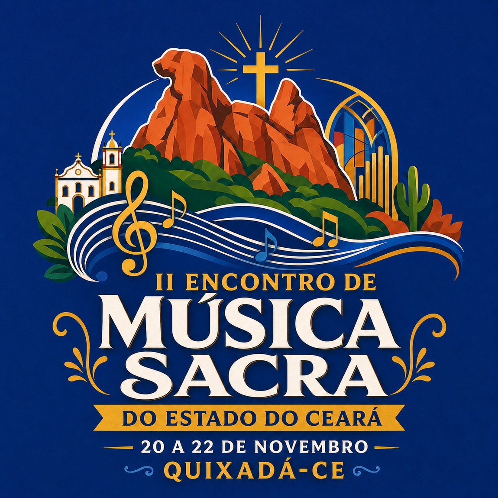
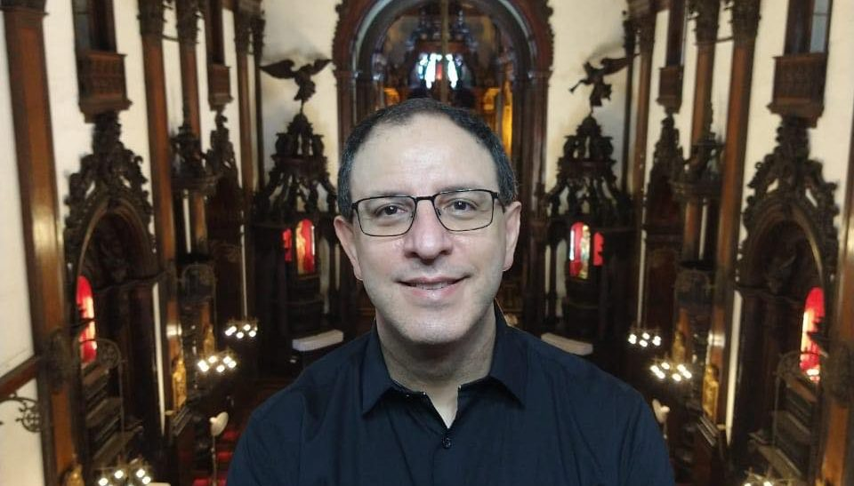
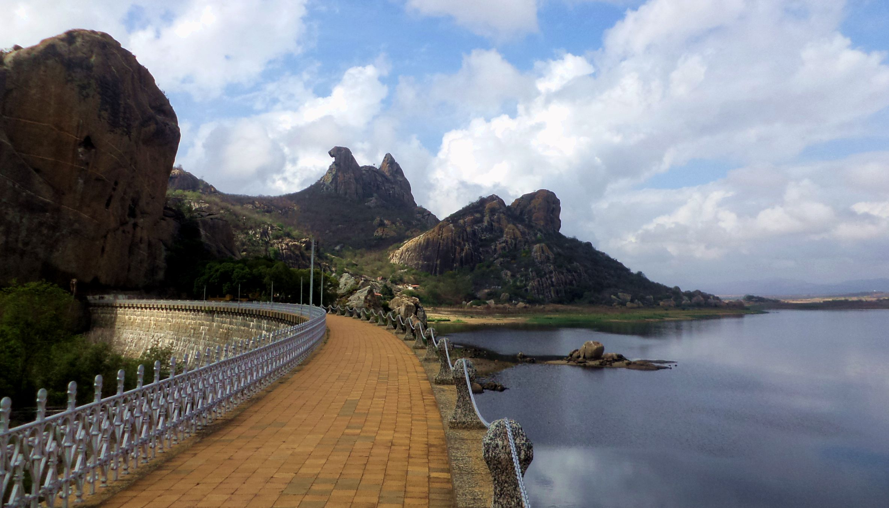
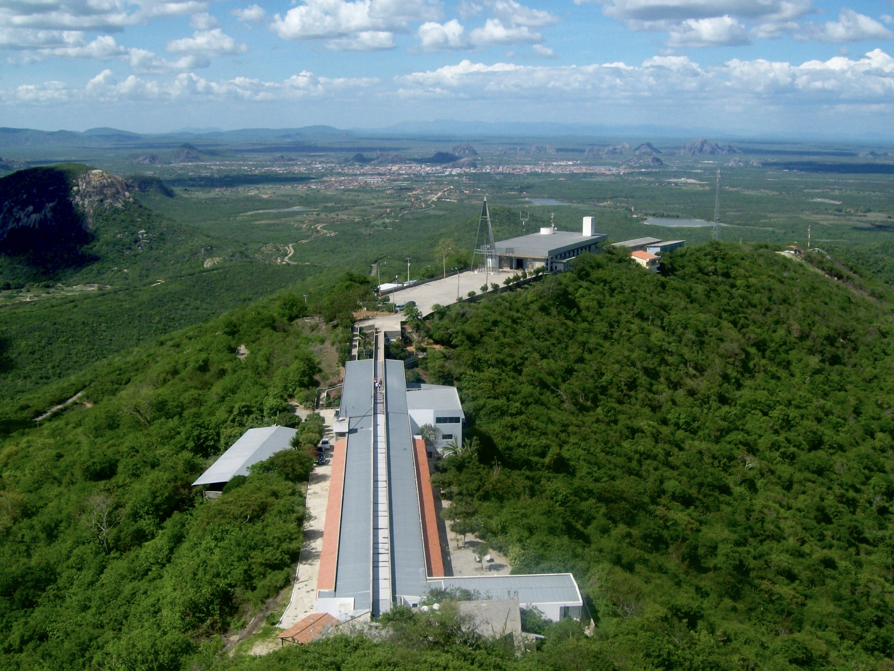
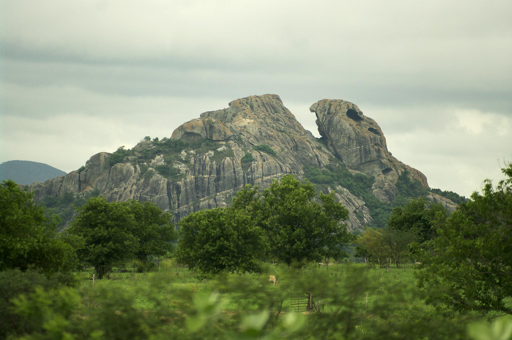
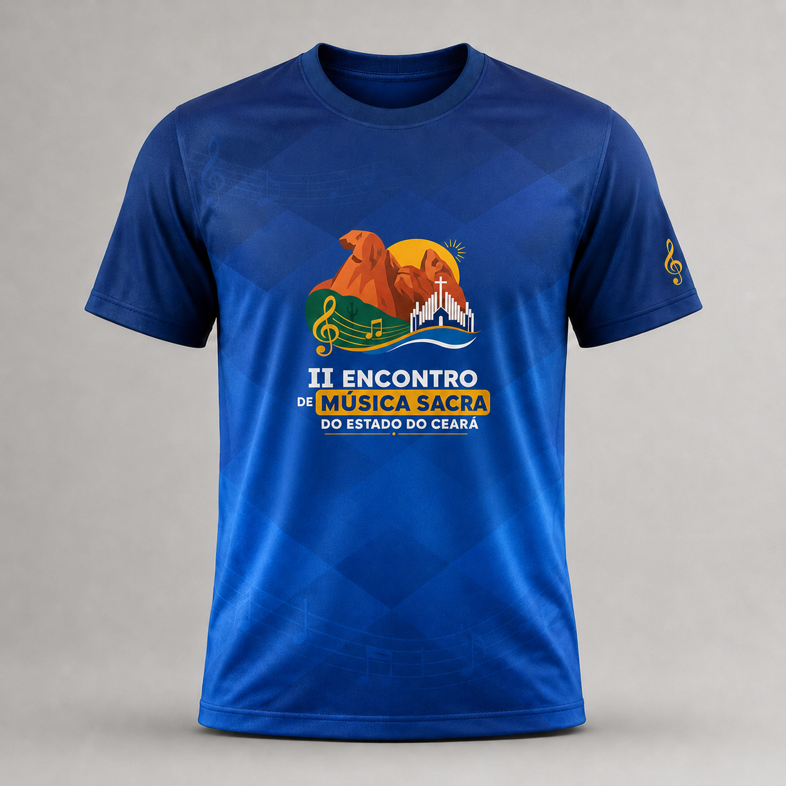
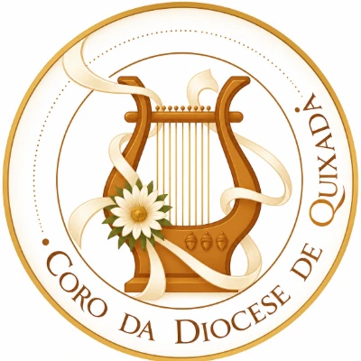
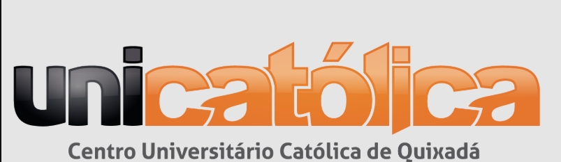
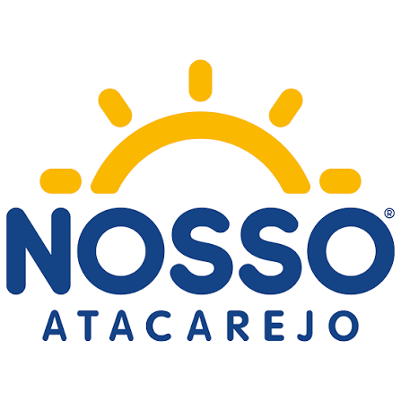
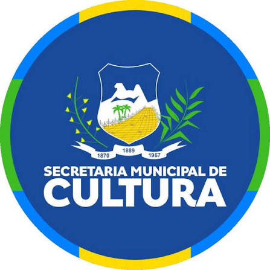

Uma celebração viva da tradição musical sacra
O encontro conecta formação técnica, repertório litúrgico, experiência coral e vida comunitária. A linguagem visual preserva o respeito pelo tema sacro, mas com uma energia jovem, vibrante e acolhedora.
Três dias de formação, celebração e espiritualidade pela música sacra, reunindo músicos, regentes, cantores, liturgistas e fiéis.

O encontro conecta formação técnica, repertório litúrgico, experiência coral e vida comunitária. A linguagem visual preserva o respeito pelo tema sacro, mas com uma energia jovem, vibrante e acolhedora.
Maestro, pesquisador e professor, Clayton atua em música sacra, canto gregoriano, regência, história da música sacra e musicologia litúrgica. Sua presença aproxima prática coral, tradição litúrgica e pesquisa musical.

Quixadá mistura fé, música, literatura, natureza e aventura. O cenário dos monólitos cria uma experiência de encontro que vai além da programação.



A inscrição estática apresenta valor base, opção de incluir a camisa oficial e cálculo automático do total.




